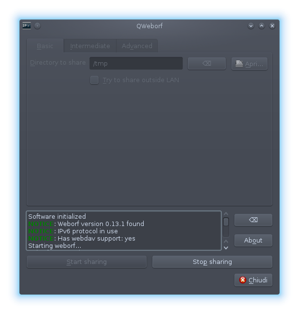

qweborf
qweborf provides a GUI to share your files over the HTTP protocol. It acts as a wrapper to weborf.
It allows you to:
- Traverse NAT (acts as a wrapper to miniupnpc)
- Enable DAV
- Enable compression of directories, sending them as .tar.gz
- Enable authentication